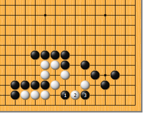
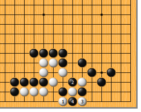
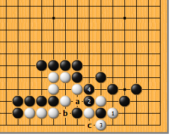
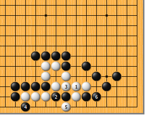
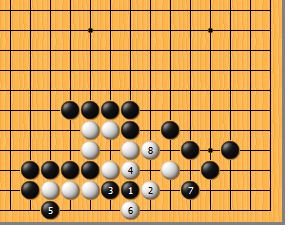
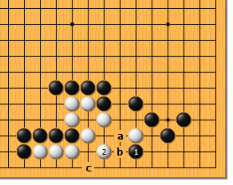

|  |  | |
| 图1 黑1点，确实是形状的要点。白2尖顶，也是唯一的应手，接下来，黑3嵌，绝妙！
| 图2 白1扳，顽强抵抗。黑2打时，白3反打，黑4提，结果成劫。 | |
|
 |
 | |
图3 前图的白1如于本图1位抱吃，黑2反打，白3提时，黑4长。接下来，白a断则黑b吃，白不行；白3如于4位挡，黑c位提，白也无应手。 | 图4 白1如果粘，黑2先手断是好次序。由于三气杀三气，白3只好紧气，黑4先手扳，白5打，黑6从容退回，白只有一眼。
| |
|
|
 | |
图5 白1如果立，结果是一样的。黑2、4先手处理后，6位拉回一子，白就死了。白a的扳紧了黑一气，就可以避免黑2的断，可以劫活。
| 图6 黑1、白2交换后，黑3马上断，不好。白4紧气，黑5扳，白6打，黑7尖破眼时，白8在另一边做眼，正好净活。正解图中黑3的嵌，就是防止黑在此做出一眼。 | |
|  | 您的高见 | |
图7 黑1托不够深入。白2虎，正好护住要害。而后，黑a扳则白b断，黑来不及c位点破眼。 |